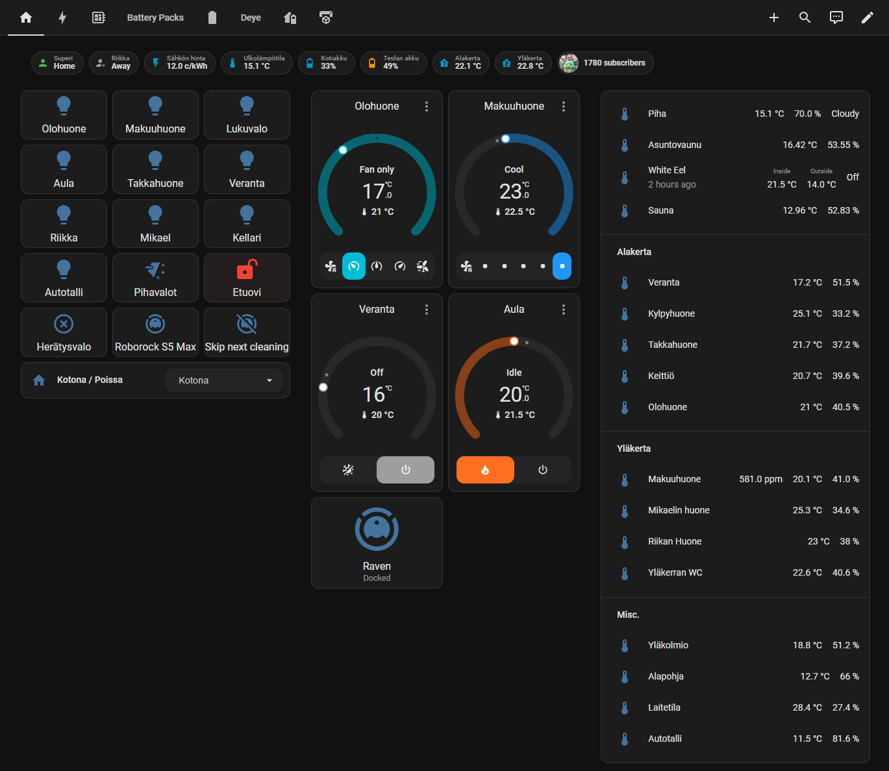
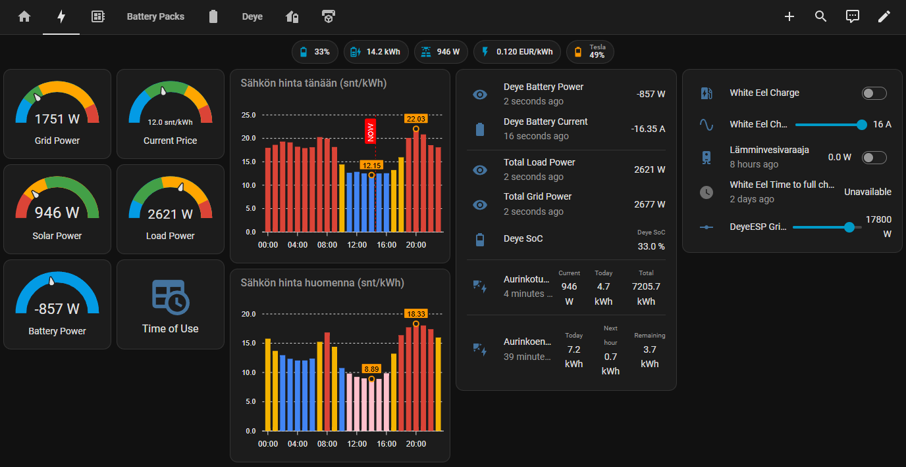

Kotiautomaatio
Kotiautomaatio on ollut yksi isoimpia intohimoprojektejani jo useamman vuoden ajan. Aluksi aloitin muutamilla valo ohjauksilla lämpötiladatan keräämisellä asuessani vuokraasunnossa johon ei voinut juurikaan automaatioita tehdä. Vuonna 2018 muutin avopuolisoni kanssa omakotitaloon ja se on tarjonnut monipuolisia mahdollisuuksia kehittää kotiautomaatiota.
Kotiautomaationi perustana ja pohjana toimii avoimen lähdekoodin Home Assistant järjestelmä jonka kehityksestä vastaa laaja aktiivinen vapaaehtoisten yhteisö. Home Assistantin taustallaa toimiva Nabu Casa koordinoi kehitystyötä ja julkaisuja. Lisäksi se tarjoaa maksullisen mutta edullisen pilvipalvelun joka mahdollistaa etäkäytön ilman tarvetta julkaista omaa kotiautomaatiota suoraan julkiseen internettiin. Hienointa Nabu Casan toiminnassa on se että tätä rahaa käytetään kehtitystyötä tekevien vapaaehtoisten palkitsemiseen.
Home Assistant tarjoaa suoria integraatiota useimpiin markkinoilla oleviin älylaitteisiin ja palveluihin, mutta se on myös erittäin laajennettavissa ja muokattavissa. Esimerkiksi Home Assistant Community Storesta (HACS) löytyy tuhansia erilaisia lisäpalikoita ulkoasun kustomointiin ja marginaalisten laitteiden integrointiin.
Dashboardin pääsivu toimii ikäänkuin kodin digitaalisena kaukosäätimenä josta pääsee käsiksi kaikkiin tärkeimpiin toimintoihin ja oleellisimpiin tietoihin. Saat kuvat isommaksi klikkaamalla! Tärkeimmät automaatioihin liittyvät asiat omassa toteutuksessani on kiinteistäkuston ja sähköauton latauksen optimointi tiedossa olevien sähkön hintojen pohjalta, lämmityksen optimointi ja ohjaus, valaistuksen ohjaus ja tietysti kaikenlainen datan kerääminen ja visualisointi.

Home Assistant dashboardin pääsivu

Home Assistant dashboardin energiasivu
Kotiautomaatio lukuina
| Integraatiot | 49 kpl |
| Laitteet | 173 kpl |
| Entiteetit | 1096 kpl |
| MariaDB koko | 5.8 GB |
| InfluxDB koko | 15.4 GB |
Linkkejä
Oma toteutus
Home Assistant tarjoaa oman alustan toteuttaa automaatioita mutta omat automaationi olen toteuttanut NodeRED laajennuksella jolla automaatiot on helppo toteuttaa flow tyyppisesti ja lisäksi se tarjoaa mahdollisuuden käyttää Javascript funktioita monimutkaisempien automaatioiden toteuttamiseen. Olen toteuttanut lähes kaikki automaatiot NodeREDin avulla ja käyttänyt Home Assistantin tarjoamia työkaluja lähinnä erilaisten helpereiden tekemiseen.
Useimmat älylaite valmistajat tai valmistajat joiden laitteissa on älyominaisuuksia yrittävät tarjota integraatiota oman pilvipalvelunsa kautta mutta olen itse pyrkinyt mahdollisuuksien mukaan toteuttamaan integraatiot suoraan paikallisesti. Tästä seuraa se etu etten ole riippuvainen laitevalmistajien tarjoamasta pilvipalvelusta tai kotiautomaationi ei lakkaa toimimasta jos internet yhteys katkeaa. Lisäksi voin asettaa laitteet erilliseen VLAN verkkoon josta ei ole pääsyä ulkoverkkoon. Eli laitteet eivtä pääse niin sanotusta "soittelemaan kotiin" ja keräämään telemetriaa valmistajalle.
ESPHome on mahdollistanut helpon tavan tehdä omia älylaitteita ja olen raknetanut sen avulla kommunikaattorin jolla pystyn ohjaamaan kiinteistössä olevaan hybridi invertteriä ja keräämään siitä dataa käytönnössä reaaliajassa. Home Assistantin oletus tietokanta ratkaisu on SQLite joka on kevyt ja helppo mutta suuren datamäärän kanssa se muuttuu hitaaksi. Tähän ratkaisuksi olen ottanut tietokantaratkaisuksi MariaDB mutta sekin on huono jos halutaan kerätä pitkäaikaista dataa. MariaDB tuo kuitenkin huomattavaa parannusta suorituskykyyn, tällä hetkellä tietokannassa säilytetään tarkka data viimeiseltä 14 päivältä ja sitä vanhempi data on keskiarvoistettua dataa viimeiseltä vuodelta. Tällä hetkellä tietokannan koko on n. 5.8GB.
Minulla on kuitenkin pitkäaikaisen datan keräämistä varten asennettua InfluxDB tietokanta joka on parempi "time-series" tyyppisen datan keräämiseen ja sitä on helppo visualisoida esimerkiksi Grafanalla. InfluxDB tietokannan koko on tällä hetkellä reilu 15GB. Tärkein asia mitä visualisoin Grafanalla on kiinteistöakun ja aurinkopaneelien muodostaman säästön suoraan eruoissa. Lisäksi minulla on Grafanaan rakennettu statistiikka esimerkiksi sähköauton toteutuneen latauksen kustanniksista sekä todellisesta keskihinnasta valitulla ajanjaksolla.